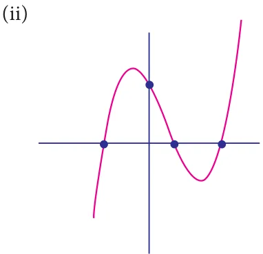

Find the roots of the following polynomial equations.
- \(5x - 3 = 0\) (ii) \(- 7 - 4x = 0\)
Note
Solution
- A zero of a polynomial can be
- \(5x - 3 = 0\) any real number not necessarily
(or) \(5x = 3\) zero.
Then, \(x = \frac{3}{5}\) (ii) A non zero constant polynomial
- \(- 7 - 4x = 0\) has no zero.
(or) \(= - 7\) (iii) By convention, every real
Then, \(= \frac{7}{-4} = - \frac{7}{4}\) number is zero of the zero
Check whether \(- 3\) and 3 are zeros of the polynomial \(x - 9\)
Solution
Let f(x) \(= x - 9\)
Then, \(f(-3) =\) \(-3 - 9 = 9 - 9 = 0\)
\(f(+3) = 3 - 9 = 9 - 9 = 0\)
(-3 and 3 are zeros of the polynomial \(x^{2} - 9\)
- Find the value of the polynomial f^y \(= - +\) at

- \(y = 1 = - 1 = 0\)
- If p(x) \(= x^{2} - 2 2x+1\), find (2 2).
- Find the zeros of the polynomial in each of the following :
- p(x) \(= x - 3\) (ii) p(x) \(= 2x + 5\) (iii) q(y) \(= 2y - 3\)
- f(z) \(= 8z\) (v) p(x) = ax when a \(\neq\) 0 (vi) h(x) = ax \(+ b\), a \(\neq\) 0, a, b \(\in R\)
- Find the roots of the polynomial equations .
- \(5x - 6 = 0\) (ii) \(x +3 = 0\)
- \(10x + 9 = 0\) (iv) \(9x - 4 = 0\)
- Verify whether the following are zeros of the polynomial indicated against them, or not.
- p(x) \(= 2x - 1\), \(x = \frac{1}{2}\) (ii) p(x) \(= x - 1\), \(x = 1\)
- p(x) = ax \(+ b\), \(x = \frac{-b}{a}\) (iv) p(x) = ^x \(+ 3h^x - 4h\), \(x = 4\), \(x = - 3\)
- Find the number of zeros of the following polynomials represented by their graphs.

